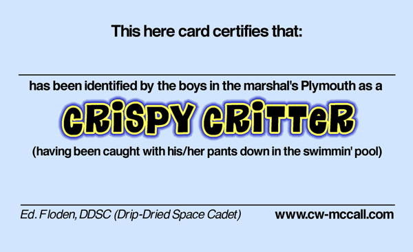

The Legend-News
What We Got Here
- Not My Favorite Year. In which Ed. describes his life in 2013.
- Crispy Critters. What they’ve been doing.
- Previously, in The Legend-News. “Holiday Homerdrive”
- Song a’ th’ Month. Today is December 24. Name that tune.
Not My Favorite Year
In The Legend-News I don’t talk about myself very much, unless there’s a connection to C.W. McCall. This article is an exception; feel free to skip to the next one.
Have you been wondering why The Legend-News, typically a once-per-month publication [insert laughter here], hasn’t put out an issue in six-and-a-half months? Because life occasionally sucks, that’s why. I had planned for an issue in July, missed that deadline, and thought that their would be an issue in August. I was wrong.
2013 has not been a good year for me. I’m self-employed as a website designer, but business has been slow this year. I’ve been supplementing my income with side jobs, including working at a local flea market and repairing computers. I really haven’t had the time to sit down for a few hours and crank out an issue.
And then October arrived.
I’d been having a breathing problem this year: just a little exertion, and I’d be panting as if I had just run a foot race. Except that I hadn’t run anywhere; I’d just walked to the end of the driveway to check the mailbox. I thought that maybe I’d developed an allergy (high pollen counts around here), or maybe asthma (I’m overweight). I finally visited a local doctor. His diagnosis was not good: congestive heart failure. That doesn’t mean that my heart had stopped working, only that I had fluid in my lungs because of a possibly faulty heart valve. Yay. Go to Hospital; go directly to Hospital; do not pass Go.
24 hours and a diuretic later, I had lost 12 pounds (about 5.5 kilograms, for those of you familar with a rational system of weights and measures) and my breathing had improved immensely. That weight (and fluid) loss was followed by several days of echocardiograms, CAT scans, and more medication than I’d ever used in my life. The conclusion: not only did I have a leaky heart valve, I had an aortic aneurysm.
Crap. I would have settled for asthma, even if it did mean paying too much for medication, thank you Big Pharma. With asthma, no surgery would be needed. With the bad valve and aneurysm, I would need surgery.
I was discharged after three days, but that was a brief respite as I was reporting to another hospital three days after that for surgery.
I’ll skip the details of my surgical experience; suffice to say, I spent five hours under anesthetic, and woke up to a large incision in my chest, another incision in my groin, and some drainage tubes in my abdomen. My heart valve had been replaced and the aneurysm repaired.
Seven weeks later, I’m still recovering. I’m feeling better every day, but I’m not allowed to lift objects weighing more than ten pounds, or shovel snow. The prohibition on snow shoveling is really annoying, because there have been four snowfalls in the past five weeks and my wife has been the person who’s been clearing the driveway. Everyone knows that shoveling snow is man’s work.
So there you have it: the Space Cadet is still a bit under the weather, but improving rapidly. On the plus side, I am now 47 pounds (21 kilograms) lighter than when these events started and I’m still losing weight.
To all of the Critters who may have health problems: now I know what it feels like.
But enough about me. Merry Christmas, everyone! And have a Happy New Year!
— Ed.
The latest review on The Thinking Chick’s Guide: The Bad Seed (1956).
Crispy Critters
New Critters on the Block. Jason Bergman of Vermont, professional violinist. David Gestewitz of Alton Bay, New Hampshire. Christopher “Doc” Palmer, who is working on a biography of the Omaha television movie host, Dr. San Guinary. Tim Ryan, radio jock, interviewer of Bill Fries. Grayson Campbell of Florida. Bret Schmerker of Byron, California. Annigje Franssen of Lieshout, The Netherlands. Don Eisentraeger of Rockford, Illinois. And Christopher Bay of West Hills, California, who sent this:

And here’s the almost-official membership card of the Crispy Critters (also from Christopher Bay):

Chris Doyle says that “‘Convoy’ is featured on ‘Rebel Radio’ in the new Grand Theft Auto V. Who’d have thunk it?”
Marcus One asks “What happened to C.W. McCall’s Levi’s Jeep CJ-5?” (Bill appeared in an advertisement for Jeep.) Bill says that he never owned one, “but did get a ’75 Renegade Golden Eagle as a gift from American Motors. It’s the black one on the Black Bear Road album.”
From Chris Guenther, a pointer to “Wolf Creek Pass and the Roadtrek eTrek” on the Family Motor Coach Association website.
Ruth Kauffman played “Sing Silent Night” in August. (I hope that she felt cooler afterwards. — Ed.)
From Greg Lucke: “Westward ho! Europeans drive the Lincoln Highway on 100th anniversary” (And I missed out on the road trips, even though I’m a member of the Lincoln Highway Association. — Ed.)
Mark Heaton reports that on June 29, “Just to let you know I Googled ‘C.W. McCall’ and your site was #1 on the search list.” (And still is, on December 23! — Ed.)
Back in June, Tom Claffey (of Searching for C.W. McCall fame) was interviewed on Sirius XM Radio’s “Freewheelin’” show by a couple of ladies from the Women in Trucking Association.
Looking for real estate in northern Cook, Lake, Kane or McHenry Counties in Illinois? Ask Tony Bellino.
Previously, in The Legend-News for 2004 June 6.
Holiday Homerdrive
Thanks to Alan “Skywalker” Chafin (who seems to have more time on his hands than I have), I’ve now a copy of “Christmas Convoy”, which was a scene in the Christmas episode of season 15 of The Simpsons.
The transcript:
DJ: Now let's downshift to the holiday spirit with "Christmas Convoy".
Trucker: Star shone bright, that silent night, ninety miles out of manger town. All the gold and myrrh and frankincense, three kings, put the hammer down!
Chorus: 'Cause we've got a Christmas Convoy, ain't she a beautiful thing? We've gotta roll this truckin' convoy, to see the newborn king. Convoy!
Trucker: 10-4, King of the Jews.
And the file.
PFG Performance: full-service auto repair in Crystal Lake, Illinois.
Song A’ Th’ Month
Christmas is only a day away. What other song could there be?
“Sing Silent Night”
(C.W. McCall, Bill Fries, Chip Davis) From the LP
Rubber Duck
When the snow falls on Christmas Eve,
And everything’s white
I sit by the window,
And remember another night
When Mama played the organ,
And we turned off all the lights
And we all stood around her
And sang
Silent Night

The organ is quiet now,
And Mama’s gone
The sound of that Christmas Eve
Will live on and on
We sang all the old carols,
The hymns she loved to hear
And she played them over, one by one,
From memory, and by ear
And then she’d find the ancient album,
With its pages turned gold
And the crayon-colored paper star
I made so long ago
But brighter than any star
Was the love in Mama’s eyes
As she said, “Merry Christmas, kids,”
And she kissed us goodnight
And the organ’s quiet now,
And Mama’s gone
But the sound of that Christmas Eve
Will live on and on
The years have gone by now,
Since that last Christmas Eve
But the joy is still with me,
And the love will never leave
When Mama played the organ,
And we turned off all the lights
And we all stood together
And sang the last
Silent Night
“Sing Silent Night” appears on the LP of Rubber Duck.
The Legend-News is published by TechRen Enterprises, which would have gotten away with it if it wasn’t for you kids and your dog! Copyright 2013 TechRen Enterprises. Send subscription requests, unsubscribe demands, complaints, kudos, suggestions, news and other contributions to Legend-News@cw-mccall.com. Almost everything in The Legend-News has been written by Ed. Floden, except for the stuff that he blames on someone else. “Whoa! You sound like me before medication.”